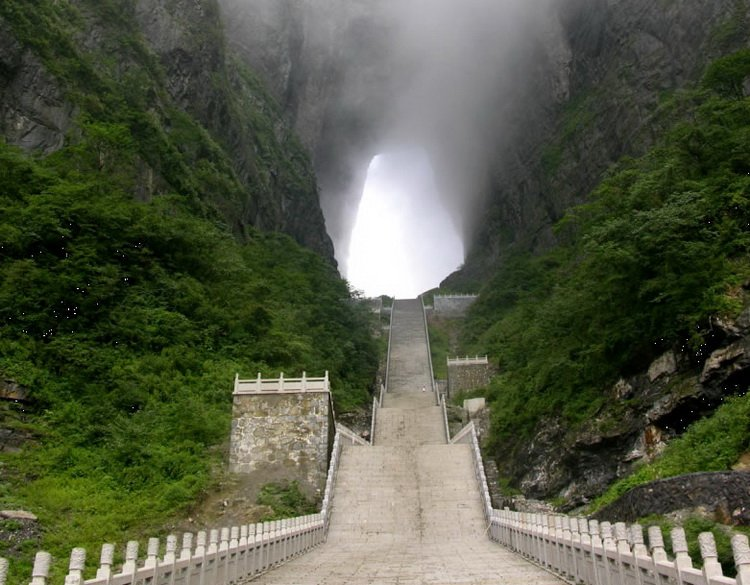

Лучше гор могут быть только горы. Известная фраза Высоцкого могла бы заканчиваться словами «в которых есть пещеры и арки». И горы и пещеры всегда привлекают человека. Особенно красиво выглядят природные арки в скалах. Это и знаменитая Эль-Арко в Мексике, и Лазурное Окно Мальты. Но это всё горные образования, расположенные на уровне моря. Красиво? Конечно, красиво.
А теперь представьте огромную арку высоко в горах. Этакую гигантскую дыру в скале. Именно такое «окно» есть в горе Тяньмэнь. Расположено оно в северо-западной части китайской провинции Хунань, на территории одноименного парка Тяньмэнь. Самое известное название этого природного шедевра – Небесные врата.
Можно конечно услышать и другие имена этого чуда – Райские врата, ворота в небеса, пещера Тяньмэнь. А некоторые жители Поднебесной называют её волшебная пещера Западной Хунани.
Проем возник очень давно, и причина здесь вовсе не в эрозии горных пород или вымывании скал тысячелетними водными потоками. Китайцы с древних времен ведут летописи, поэтому абсолютно точно известно, что Небесные врата возникли в 263 году нашей эры в результате землетрясения. Подземные толчки привели к тому, что большой кусок скалы просто отвалился, создав такую интересную арку. Проём в скале поражает своими размерами.
Очарование горы Тяньмэнь и её окрестностей увенчана величественной и сказочной аркой. Впечатления от её созерцания нереальные. С древних времен местные жители наделяют и гору и арку сверхъестественными свойствами. Ореол мистичности сопровождает тебя на пути к Райским Вратам. Особенно когда в проёме проплывают облака тумана, а ты поднимаешься по 999 ступеням вверх. Да, именно столько ступеней ведут на вершину горы непосредственно к арке.